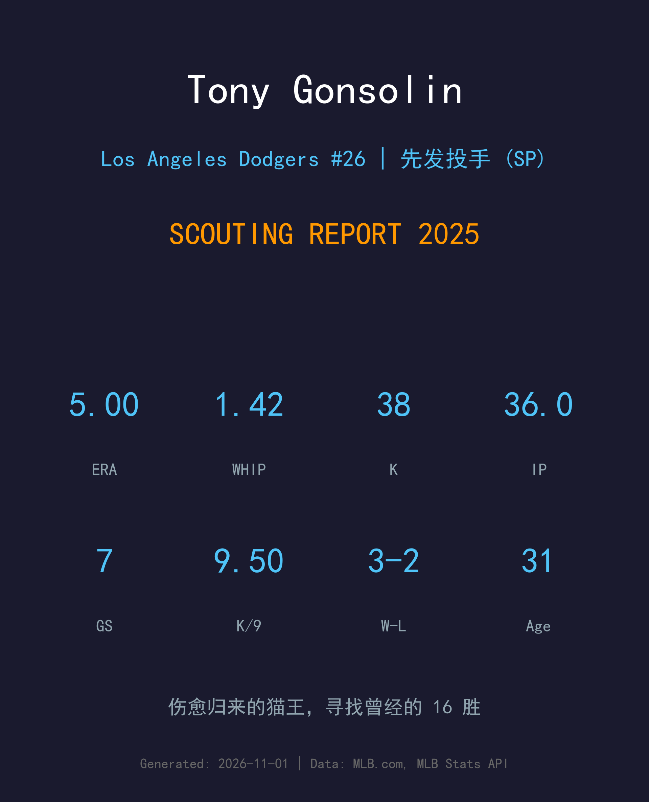
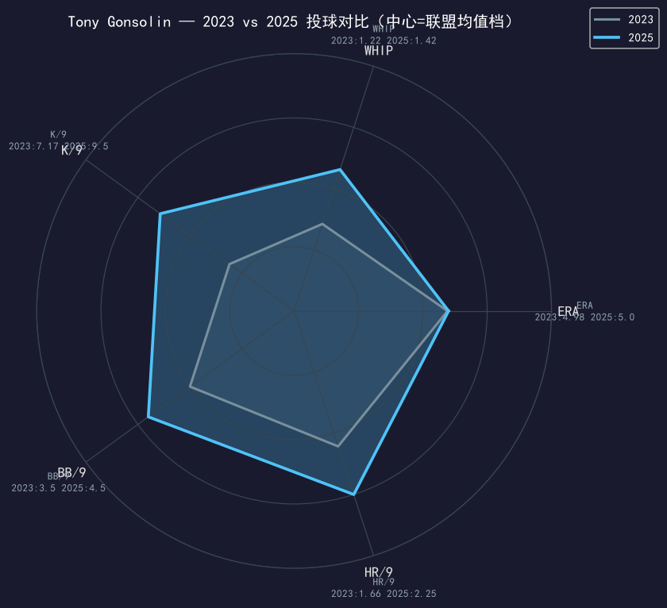
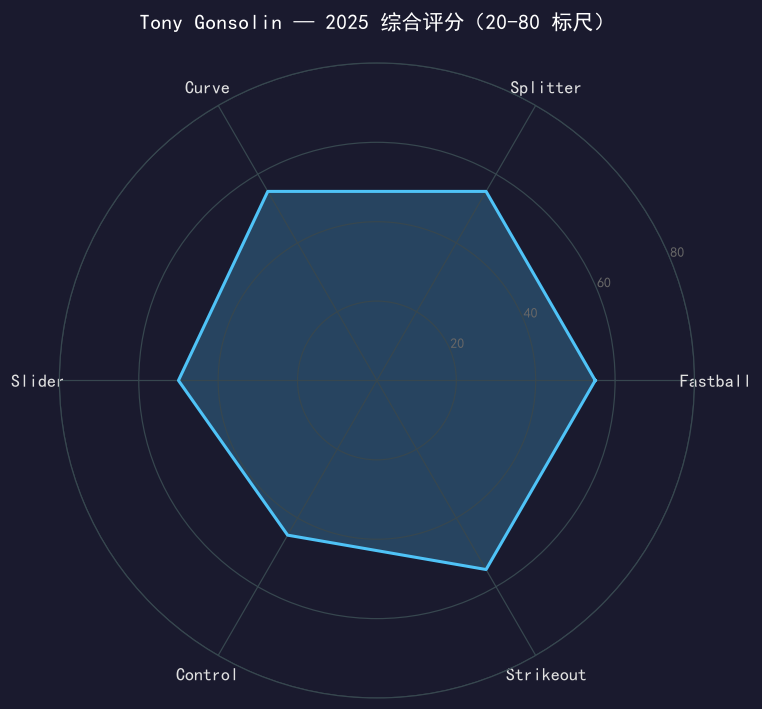

Los Angeles Dodgers #26 | 先发投手 | 右投 | 伤愈归来的猫王，寻找曾经的 16 胜

Tony Gonsolin 的 2025 年是一首 comeback 的半首歌。经历了 2023 赛季末的肘部手术与 2024 年整季的缺席后，他在 2025 年 5 月重新回到大联盟轮值——7 场先发、3 胜 2 负、K/9 9.50 创生涯新高。好消息是三振能力回来了，而且比以前更锋利；坏消息是那份熟悉的「猫王」式压制力还没有完全归位。
5.00 自责分率的背后，9 支全垒打（HR/9 2.25）是最刺眼的数字——比受伤前的 2023 年还要高。控球（BB/9 4.50）也还在生锈状态。他的身体告诉他可以投，但精细度需要更多局数来重新校准。
2025 年 11 月的 Gonsolin 是一张「有待重估的资产」：2022 年那个 16 胜、2.14 自责分率的全明星版本仍在某个地方。找到他需要健康、局数，以及一点点耐心。
16 胜 1 负、2.14 自责分率，入选国联全明星——「猫王」投出了生涯代表作，成为道奇轮值的支柱。
5 月重回大联盟，7 场先发拿下 3 胜，K/9 9.50 创生涯新高——从手术台回到投手丘的路，他走了整整 20 个月。

| 赛季 | G | GS | W-L | ERA | WHIP | IP | SO | BB | K/9 | HR/9 |
|---|---|---|---|---|---|---|---|---|---|---|
| 2023（伤前最后一个完整年） | 20 | 20 | 8-5 | 4.98 | 1.22 | 103.0 | 82 | 40 | 7.17 | 1.66 |
| 2025（伤愈复出） | 7 | 7 | 3-2 | 5.00 | 1.42 | 36.0 | 38 | 18 | 9.50 | 2.25 |
跨过 20 个月的手术与复健，Gonsolin 带回来的东西耐人寻味：三振率从 7.17 跃升到 9.50，说明他的「武器」升级了——速球均速与变化球锋利度都在；但 HR/9 从 1.66 涨到 2.25，BB/9 从 3.50 涨到 4.50，说明「掌控」还在复健中。这种「stuff 超前于 command」的形态在伤愈投手中很常见，也往往需要 2-3 个完整赛季才能重新对齐。
2025 赛季真实配球数据（MLB Stats API pitchArsenal）：
复健归来的速球质量出人意料地好，均速几乎未掉——这是他 K/9 创生涯新高的物质基础。
「猫王」的签名武器，纵向下坠诱使打者挥空。复出季它依然是三振的主要来源。
改变节奏与视线高度的传统曲球，先发投手配球结构里的重要一环。
对左打者的横向武器，与速球构成 5 mph 速差区间的高效组合。
伤愈投手最常见的剧本是「球速回来了、三振回不来了」。Gonsolin 恰恰相反——9.50 的 K/9 比受伤前任何赛季都高。这说明手术不仅修好了他的手肘，甚至可能让他卸下了长年累积的隐性负担。从 stuff 角度，2025 年的他比以往任何时候都更「锋利」。
HR/9 2.25 与 BB/9 4.50 都指向同一件事：他的身体还无法在所有场次里重复相同的投球动作——尤其是疲劳累积的后期局数。36 局的样本太小，无法分辨哪些是「真实退化」、哪些是「重新校准中的抖动」。2026 年前 10 场先发将是真正的判定期。
2025 年道奇轮值伤病频发，Gonsolin 的回归本身就是救急资产。2026 年他大概率以「轮值第五人 / 长中继摇摆人」的身份进入春训竞争——这个位置既是对他健康的保护，也是对他 upside 的合理赌注。

伤愈的猫王，等待重新校准
B- 级 / 轮值拼图（复健变量）
道奇 2025 季后赛夺冠之路：外卡 2-0 红人 → NLDS 3-1 费城人 → NLCS 4-0 酿酒人 → 世界大赛 4-3 多伦多蓝鸟。
Gonsolin 未能进入季后赛名单。7 场先发的复出季虽好，但教练组在季后赛更信任完整的季赛样本与伤愈稳定的老将。
Tony Gonsolin 的 2026 年是一次「重新估值」的机会：如果 K/9 9.50 的 stuff 配上回归的控球，他是轮值中段的合格答案；如果长打与保送问题持续，他可能滑向长中继。道奇对他的耐心取决于春训的身体状态，而他的天赋值得这份耐心。
理想剧本：完整赛季 140+ 局，ERA 回到 3.8 区间
现实基准：轮值第五人摇摆人，100 局左右
上行惊喜：复制 2022 年形态的八成，成为轮值四号位
Tony Gonsolin 来自北加州的瓦卡维尔，2019 年登上大联盟。因为名字与举止的反差，道奇球迷送给他「猫王」的绰号——而这个昵称随着 2022 年的爆发季变得名副其实：16 胜 1 负、2.14 自责分率、入选全明星，他是那年全联盟最难击败的投手之一。
随后是职业体育最残忍的转折：2023 年的伤病、手术、以及一整季的缺席。对依赖身体精度的投手来说，20 个月的空白足以让任何人忘记他的存在。但 2025 年 5 月，他重新站上了投手丘——7 场先发，三振率创生涯新高。
2025 年 11 月的 Gonsolin 还没有找回 2022 年的自己，但他已经找回了投手丘。对一个 31 岁、动过手术、依然能飙出 93.5 mph 的男人来说，故事还远远没有到写结局的时候。